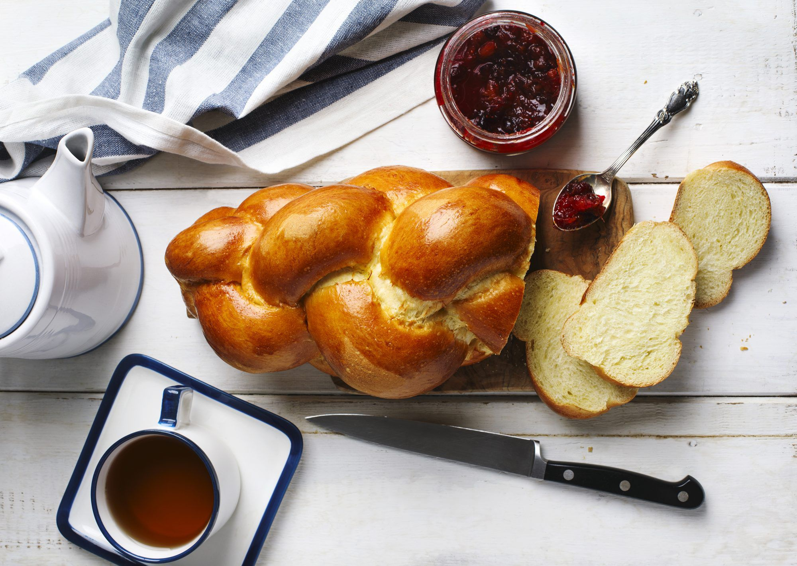

Challah
This three-strand variant of this traditional plaited loaf is easier on beginners.

Ingredients
- 1 cup warm water
- 1 spoonful sugar
- 2 tbsp active dry yeast
- 5 cups all purpose flour
- 1 tsp salt
- 1/4 cup vegetable oil
- 1/4 cup honey
- 2 eggs
- 1 egg for wash
Method
- First we will activate the yeast in a separate mixture. Add 1 cup of warm water to a small bowl or Pyrex and add 1 spoonful of sugar. Measure and add 2 tbsp of active dry yeast and allow the mixture to sit for a few minutes.
- In a large bowl, add 5 cups of all purpose flour. Add 1 tsp of salt, 1/4 cup vegetable oil, 1/4 cup honey, and 2 eggs. Lightly mix.
- Add the yeast mixture to the rest of the ingredients. Mix until a dough is formed.
- Remove the dough from the bowl. Lightly flour a worktop and knead the dough until smooth, which should take between 8 and 10 minutes.
- Place your dough in a bowl and cover with a towel. Leave the dough to prove for 2 hours. The dough should roughly double in size.
- Briefly work the dough and divide it into thirds. Roll each section into a long strand and plait the three strands to form a loaf.
- Place the loaf on a baking tray and leave to rest for an hour. The loaf should expand in size.
- Heat the oven to 375F and apply an egg wash to the exterior of the loaf with a pastry brush.
- Bake for 30-35 minutes.